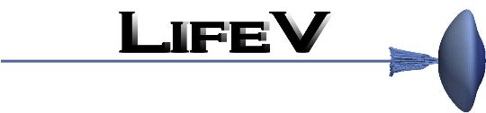
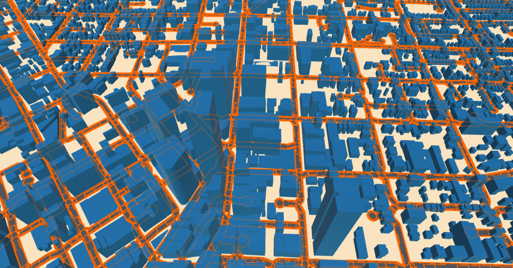
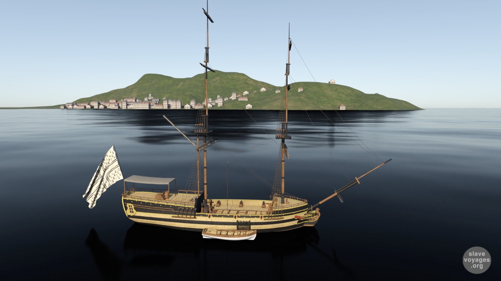
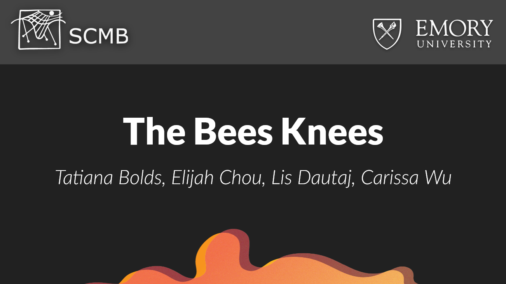

Vis4Grad
Vis4GRAD is an interactive visualization system that promotes reviewers’ self-reflection and scrutiny to ensure fair and consistent review processes. These analyses can illuminate potentially biased review processes (e.g., spending more time on average on male applicants) so that individual reviewers may self-correct and committees can collectively reflect and revise strategies and processes in subsequent review cycles.

LifeV - A Parallel Finite Element Library
LifeV (to be read Life Five) is an open source library for the numerical solution of partial differential equations with the finite element method. The choice of the finite element method is motivated by its rigorous mathematical background, with a sound control of the accuracy, coupled with excellent flexibility in managing complex geometries. LifeV is written in C++ and is entirely coded with an Object Oriented approach and advanced programming features.
Emora: Conversational AI
Emora is a Conversational AI-powered chatbot who tries to know you better through social interactions, empathizes and shares her opinions with you, and supports you in achieving personal goals as a faithful companion. Emora's natural language understanding and learning capabilities allow us to define the true meaning of a socialbot and envision the potential of Conversational AI in service of humanity.
Egtapi - Emory's Graphical Tool for Assembler Programming Instruction
Egtapi is Emory's Graphical Tool for Assembler Programming Instruction that was originally created by the graduate student Bo Yang as his Master thesis project under the direction of Dr. Shun Yan Cheung. The original version worked with Emacsim on the Solaris platform. Emacsim is the Emory Machintosh Emulator developed by Edgar Leon under the direction of Dr. Ken Mandelberg. In 2014, Andrew McLeod ported Emacsim to Linux. Egtapi was then modified to work with the new Emacsim on the Linux platform. In 2017, Egtapi was re-designed by Bashan Zuo as a Java desktop application.

Envisioning Baroque Rome
Envisioning Baroque Rome is a digital humanities project that provides an internet-based, 3D walkable reconstruction of the city of Rome ca. 1676, using the gaming platform Unity. The reconstruction is grounded in Giovanni Battista Falda’s (1643-1678) great bird’s-eye view map of that year, and subsumes the fine detail of over three hundred views of the city etched by the artist. The project enables visitors to enter the map, strolling the streets of the Baroque city as virtual pedestrians.

OpenWorld Atlanta
OpenWorld Atlanta seeks to provide public access to historical information through engaging 3D and dynamic interfaces to the wealth of data extracted by the Emory Center for Digital Scholarship (ECDS) from historic maps, city directories, and archival collections from 1920s Atlanta.

Marie Seraphique 3D Recunstruction Video
A 3D reconstruction of the Marie-Séraphique, a Trans-Atlantic ship active in the trade of enslaved persons from 1769 to 1774. The 3D reconstruction was displayed in a form of a short documentary video, meant to be displayed alongside a real-life miniature replica and other related artifacts at the Nantes History Museum in France.

Bees Knees: An Agent-Based Model of Varroa Mite Infestation of Bee Hives
The agent-based model implemented with NetLogo attempts to accurately model the relationship and interactions �etween varroa mites and honey bees. Varroa mites introduced to beehives transmit diseases such as the Deformed Wing Virus (DWV) to bee larvae, and as the mites populate exponentially the overall bee population becomes increasingly affected by the DWV. Essential oil treatments (ex. thyme and spearmint) were introduced to the model to test how reapplication times of oils can affect virus transmission and total varroa mite count within an arbitrary span of time. Further refinement of the model could help beekeepers predict an essential oil cocktail that would be the most effective against varroa mite infestation.
Fuga dal Penitenziario
Semester-long project as part of a 1-credit hour course offered jointly by the Department of Italian Studies and the Department of Computer Science (IDS 290R) at Emory University. The main project goal was to make a game that would serve as a learning supplement to students who are taking ITAL 101 (the first introductory class in Italian language).